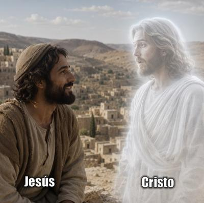

Pocas figuras han sido estudiadas con tanta intensidad como Jesús de Nazaret. Sin embargo, cuanto más se investiga sobre él, más resalta una confusión que suele ocurrir en el enfoque investigativo sobre este personaje. Porque una cosa es preguntarse: «¿Existió realmente un predicador judío llamado Jesús?», y otra muy distinta es indagar: «¿Son históricamente ciertos los supuestos «milagros» que se le atribuyen, y las afirmaciones teológicas que posteriormente se hicieron sobre él?»


Desde el punto de vista histórico, ambos planteamientos son completamente independientes, ya que incluso si aparecieran pruebas irrefutables de su existencia, eso no demostraría que se trató del «Hijo de Dios», nacido de una mujer virgen, que caminaba sobre el agua, que resucitaba muertos, y que él mismo resucitó. La existencia de un personaje histórico, y la veracidad de las creencias sobre él, pertenecen a campos totalmente diferentes. Tenemos el caso del rey Midas, a quien la mitología griega atribuye el poder de convertir en oro todo lo que tocaba. Hoy sabemos que se trata de un personaje de la vida real que vivió entre los años 740 a. e. c. y 696 a. e. c. aproximadamente, pues su existencia fue demostrada por los arqueólogos al identificar y excavar su tumba y encontrar sus restos. Sin embargo, eso no demuestra que todo lo que tocaba lo convertía en oro.
En el caso de Jesús, en el ámbito académico suele afirmarse que la mayoría de los especialistas considera probable su existencia histórica, y esto puede ser cierto, ya que, efectivamente, muchos investigadores del judaísmo del siglo I y del cristianismo primitivo, concluyen que probablemente existió un predicador judío que divulgó un mensaje apocalíptico en Galilea, siendo ejecutado por crucifixión bajo el gobierno de Poncio Pilato entre los años 30 y 33 e. c.
Entre los estudiosos seculares que sostienen esta postura destacan Bart D. Ehrman, Maurice Casey, Géza Vermes, E. P. Sanders, Paula Fredriksen, y el filólogo español Antonio Piñero. Como también John P. Meier, quien, aun siendo sacerdote católico, aplicó un método histórico especialmente riguroso. Sin embargo, ninguno de ellos acepta la realidad histórica de los supuestos «milagros» sólo porque aparezcan en los evangelios. Más bien su conclusión se limita a considerar probable la existencia de un predicador cuya figura fue posteriormente objeto de una profunda elaboración teológica, y que con el tiempo pasó a convertirse de Jesús a Cristo.
Pero frente a esta posición historicista, existe la llamada postura miticista, según la cual Jesús nunca existió como personaje histórico, siendo una construcción literaria o religiosa desarrollada durante las primeras décadas del cristianismo. Y entre sus representantes más conocidos se encuentran Richard Carrier, Robert M. Price y Thomas L. Brodie. Aunque ellos constituyen una minoría dentro de la investigación académica, sus trabajos han mantenido vivo el debate, obligando a revisar numerosos supuestos tradicionales. Pero además, recordemos que no necesariamente la mayoría tiene siempre la razón. El argumentum ad populum o apelación a la multitud, es una falacia lógica que consiste en afirmar que una idea es verdadera sólo porque muchas personas la creen o la apoyan.
Más importante es comprender por qué persiste esta discusión, y la razón principal es la escasez de pruebas directas. En efecto, no se conserva ninguna inscripción contemporánea que mencione a Jesús, ninguna carta escrita por él, ningún documento administrativo romano sobre su juicio, ninguna moneda con su nombre, ni un objeto arqueológico cuya autenticidad sea aceptada de forma general como relacionado con su persona. Todo cuanto sabemos sobre este personaje, procede de textos redactados décadas después de los supuestos hechos. Y ese es precisamente el reto de los historiadores: reconstruir la posible vida de un sujeto utilizando documentos escritos por creyentes o por autores que escribieron cuando el cristianismo ya era una doctrina en expansión.
Realmente, las únicas fuentes principales que tenemos sobre Jesús son los cuatro evangelios canónicos, los cuales fueron redactados aproximadamente entre cuarenta y setenta años después de su supuesta muerte, y con una finalidad muy clara de proselitismo religioso. Nunca pretendieron ser biografías objetivas en el sentido moderno, sino convencer al lector de que Jesús era el Mesías y el Hijo de Dios. Además de que presentan diferencias importantes en aspectos como la genealogía del protagonista, la cronología de su nacimiento, los relatos de la infancia, la fecha de la crucifixión, o los hechos relativos a su supuesta resurrección. Por tanto, incluso quienes aceptan la existencia histórica del predicador judío, consideran indispensable analizar estos textos mediante una rigurosa crítica histórica y literaria.
Y respecto a las cartas que se consideran auténticas atribuidas a Pablo de Tarso, que son todavía más antiguas que los evangelios y constituyen los documentos cristianos más tempranos que se conservan, surge otra diferencia entre historicistas y miticistas. Los primeros sostienen que Pablo conocía la existencia de un Jesús histórico (a quien sin embargo no conoció), pero que apenas se interesó por narrar su vida; mientras que los segundos responden que Pablo describe sobre todo a un «Cristo celestial», con escasas y ambiguas referencias biográficas que responden más a interpretaciones teológicas. Lo cierto es que Pablo apenas menciona episodios concretos de la vida de Jesús: no habla de sus parábolas, de la mayoría de sus «milagros», del nacimiento en Belén, de Nazaret, del bautismo o del Sermón del Monte. Un silencio que ha sido de los argumentos más discutidos por ambas corrientes.
También suelen citarse como pruebas de la existencia de Jesús ciertas referencias de Flavio Josefo y Tácito. Sin embargo, su valor histórico sigue siendo objeto de debate. En sus «Antigüedades judías», escritas hasta el año 93 o 94, Josefo menciona a Jesús en el fragmento conocido como Testimonium Flavianum, donde afirma contundentemente, sin asumir la posición objetiva de un historiador, que Jesús era «autor de hechos asombrosos» y que «era el Mesías» [el Cristo], y asegura que después de su crucifixión, se «apareció al tercer día de nuevo vivo, según los profetas divinos habían anunciado». Pero la mayoría de los especialistas considera que el texto fue modificado por copistas cristianos, porque Josefo era un judío fariseo que nunca se convirtió al cristianismo, por lo que nunca habría compartido ni afirmado como hechos históricos esas creencias cristianas. Y por otra parte, se refiere además a la ejecución de Santiago, «hermano de Jesús llamado Cristo», pasaje que muchos investigadores consideran más auténtico, pero tampoco existe unanimidad.
Por su parte el historiador romano Tácito, escribió hacia el año 116 que «Cristo» había sido ejecutado bajo Poncio Pilato durante el reinado de Tiberio. Sin embargo, redactó esa información unos ochenta años después de los supuestos hechos, sin indicar cuál era su fuente. Además, «Cristo» no era en sí un nombre propio, sino un apelativo, traducción del término hebreo «Mesías», título atribuido por los judíos a diferentes personajes.
En conjunto, esos testimonios lo único que muestran con bastante solidez es que, a fines del siglo I e inicios del II, tanto autores judíos como romanos conocían la existencia de un movimiento de unos sujetos llamados «cristianos», quienes afirmaban haber sido fundados por un personaje llamado Jesús o «Cristo», ejecutado en Judea bajo Poncio Pilato. Pero, por sí solos, tales textos no constituyen una demostración independiente de la existencia histórica de Jesús.
Incluso algunos investigadores han sugerido que en realidad existieron a principios de nuestra era en el Medio Oriente varios personajes que eran predicadores ambulantes y sanadores «mágicos», que pretendieron ser considerados como el Mesías esperado por los judíos, y que con el tiempo sus leyendas fueron fusionándose para dar forma a «la vida de Jesús de Nazaret».
O sea, al final la diferencia fundamental entre historicistas y miticistas no radica en aceptar los supuestos «milagros» atribuidos a Jesús, ya que ambos enfoques parten de una perspectiva naturalista. El desacuerdo se encuentra más bien en la valoración de las fuentes: los historicistas consideran que, pese a su carácter teológico, los evangelios conservan suficientes recuerdos históricos como para concluir que existió un predicador real, mientras que los miticistas consideran que esas fuentes son demasiado tardías, contradictorias y dependientes de tradiciones religiosas, como para llegar a esa conclusión, por lo que sostienen que el personaje conocido como Jesús de Nazaret, es una construcción literaria basada en expectativas mesiánicas e interpretaciones de las Escrituras.
En definitiva, quizás nunca pueda alcanzarse una certeza absoluta sobre la existencia de Jesús, ya que la documentación disponible es escasa, tardía y está profundamente condicionada por intereses religiosos. Pero lo que sí puede afirmarse con certeza, es que el debate sobre la historicidad de Jesús no equivale al debate sobre la verdad teológica del cristianismo.
Por tanto, incluso si algún día se demostrara de forma concluyente que Jesús existió, esto sólo confirmaría la existencia de un predicador judío del siglo I. No demostraría que nació de una mujer virgen, ni que realizó milagros, que resucitó, ni que era cierto «Dios» encarnado. La historia puede investigar la posible existencia de una persona, pero las afirmaciones sobrenaturales pertenecen al campo de las creencias. Y confundir ambos planos ha sido, durante mucho tiempo, una de las principales causas de los malentendidos en este debate.
[Godless Freeman]
Comentarios
Comments powered by Disqus